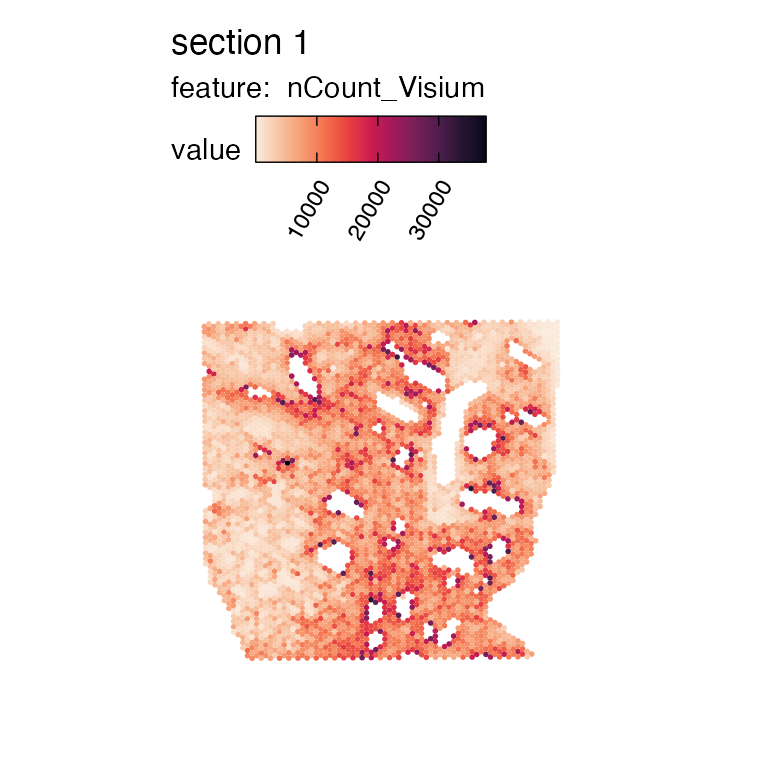
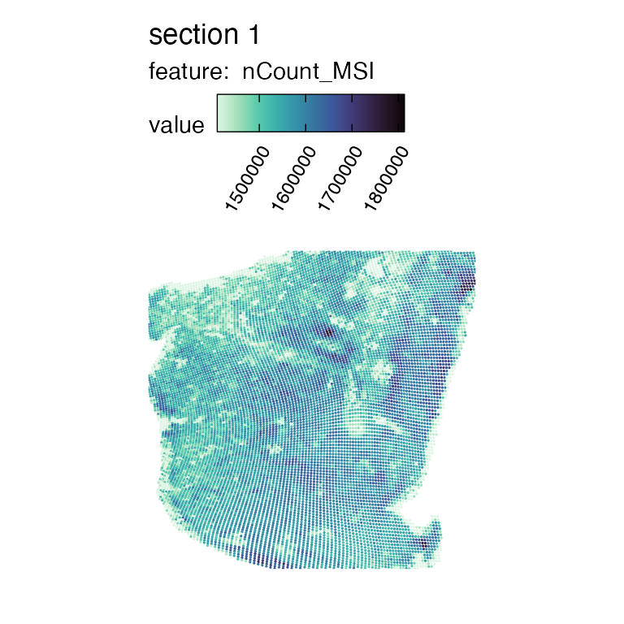
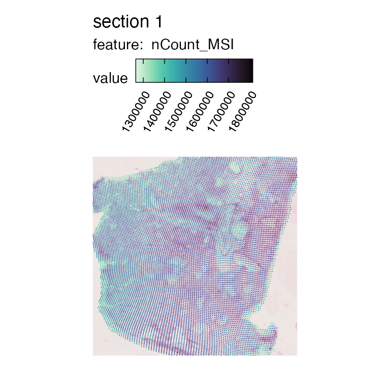
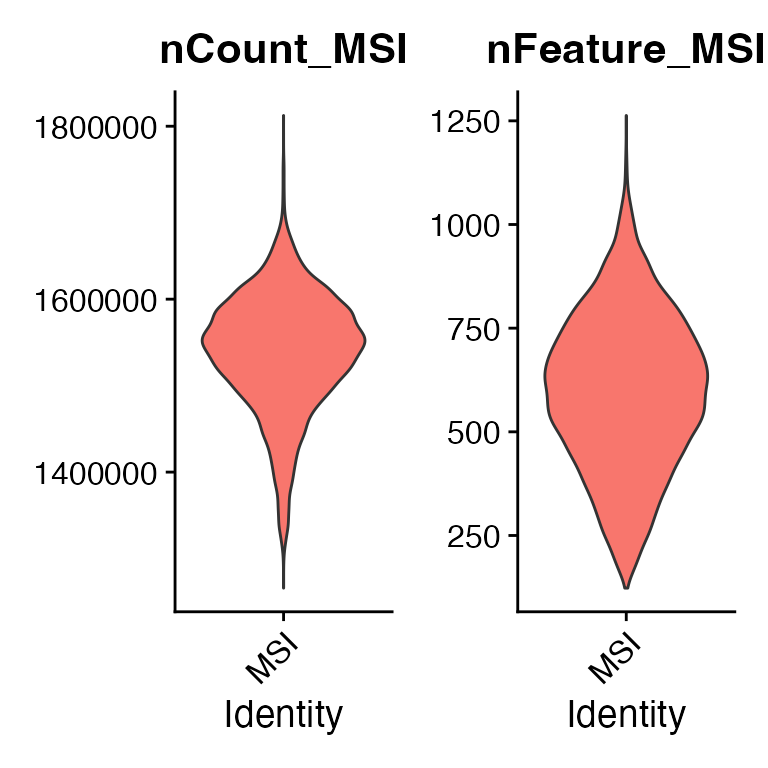
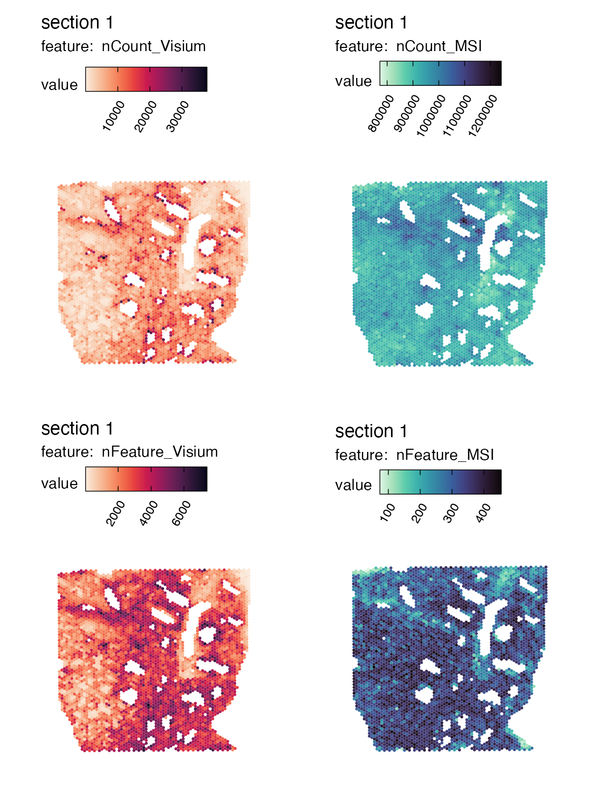
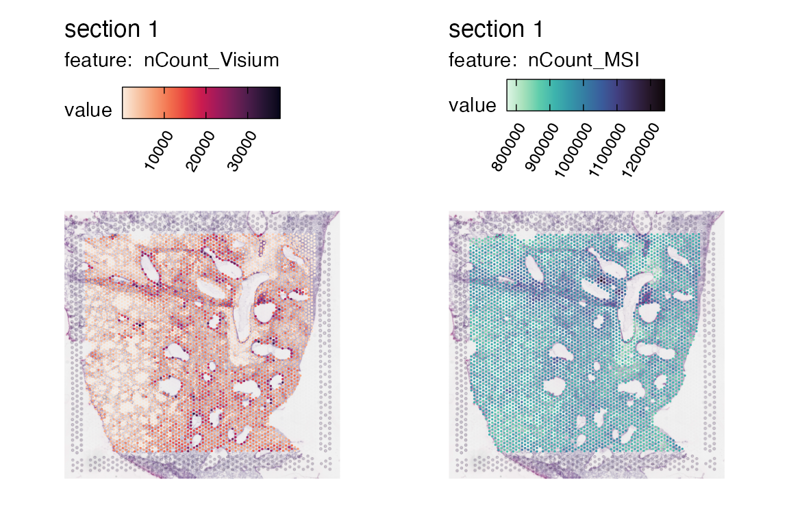

Create a spatial multimodal object
Last compiled: 19 March 2025
create_multimodal_object.RmdRecently, more and more spatial multimodal data are becoming available, however, the alignment and processing of some of these modalities can be challenging. One such example is the integration of Visium data with Mass Spectrometry Imaging (MSI) data, which can experimentally either be performed on the same or adjacent tissue sections. These two technologies produce data with different spatial resolution and mismatched spatial coordinate systems. In the case of MSI data, there is further a challenge with non-standardized file formats.
To perform the task of integrating two spatial omics datasets into
shared coordinates, we have developed a new function within
semla that joins two semla objects into a single object,
with each modality present as separate assays/layers.
A few pre-requisites are required before joining the two samples, the primary one being that the spatial coordinates of the objects first needs to have been aligned and transformed into the same pixel dimensions. And secondly, both data sets needs to be available in the standardized Space Ranger output file formats. To for instance obtained aligned and properly preprocessed Visium and MSI spatial multimodal datasets, the pipeline MAGPIE (unpublished) can be used to perform these tasks in a streamlined fashion.
For this tutorial, we have processed mouse lung tissue with both Visium and MSI, from consecutive sections. The MSI data was first preprocessed and thereafter spatially aligned into the matching Visium coordinate system using MAGPIE, which produces output files in the Space Ranger format for the aligned MSI data. In this dataset, we also have image of the H&E stained tissue section that used to obtain the MSI data.
Let’s get started!
col_scale_rocket <- viridis::rocket(11, direction = -1)
col_scale_mako <- viridis::mako(11, direction = -1)Load data
We will start by loading the two datasets, starting with the Visium data.
infoTable_visium <- data.frame(
samples = file.path("multimodal_data/mm_bleo_visium", "filtered_feature_bc_matrix.h5"),
imgs = file.path("multimodal_data/mm_bleo_visium", "spatial/tissue_hires_image.png"),
spotfiles = file.path("multimodal_data/mm_bleo_visium", "spatial/tissue_positions_list.csv"),
json = file.path("multimodal_data/mm_bleo_visium", "spatial/scalefactors_json.json")
)
se_visium <- ReadVisiumData(infoTable = infoTable_visium,
assay = "Visium",
remove_spots_outside_HE = T,
remove_spots_outside_tissue = T)## ## ── Reading 10x Visium data ──## ## ℹ Loading matrices:## → Finished loading expression matrix 1## ✔ There are 32285 features and 4108 spots in the expression matrix.## ℹ Loading coordinates:## → Finished loading coordinates for sample 1## ℹ Collected coordinates for 4108 spots.## ## ── Creating `Seurat` object## ✔ Expression matrices and coordinates are compatible## ℹ Created `Seurat` object## ℹ Created `Staffli` object## ✔ Returning a `Seurat` object with 32285 features and 4108 spots
MapFeatures(se_visium, features = "nCount_Visium", colors = col_scale_rocket)
Next, we read the MSI data available in the same stardardised Space
Ranger format. To make it easier to separate the two objects, we can
pass a unique name to the assay argument.
infoTable_msi <- data.frame(
samples = file.path("multimodal_data/mm_bleo_msi", "filtered_feature_bc_matrix.h5"),
imgs = file.path("multimodal_data/mm_bleo_msi", "spatial/tissue_hires_image.png"),
spotfiles = file.path("multimodal_data/mm_bleo_msi", "spatial/tissue_positions_list.csv"),
json = file.path("multimodal_data/mm_bleo_msi", "spatial/scalefactors_json.json")
)
se_msi <- ReadVisiumData(infoTable = infoTable_msi,
assay = "MSI",
remove_spots_outside_HE = T,
remove_spots_outside_tissue = T)## ## ── Reading 10x Visium data ──## ## ℹ Loading matrices:## → Finished loading expression matrix 1## ✔ There are 2633 features and 14824 spots in the expression matrix.## ℹ Loading coordinates:## → Finished loading coordinates for sample 1## ℹ Collected coordinates for 14824 spots.## ## ── Creating `Seurat` object## ✔ Expression matrices and coordinates are compatible## ! Found 627 spot(s) with x coordinates outside of the H&E image for sample 1## ! Found 2855 spot(s) with y coordinates outside of the H&E image for sample 1## ! Removing 3482 spots from the dataset## ℹ Created `Seurat` object## ℹ Created `Staffli` object## ✔ Returning a `Seurat` object with 2633 features and 11719 spots
MapFeatures(se_msi, features = "nCount_MSI", colors = col_scale_mako, pt_size = 0.6, min_cutoff = 0.05)
Here we see the transformed MSI data visualized in the same manner as we are used to see Visium data. The spatial resolution of MSI data is a lot higher, and since the coordinates here have been aligned to match the Visium H&E image, it is no longer present in a perfect grid but can rather appear slightly distorted.
If we want, we can load the MSI H&E image and view it together with the data.
se_msi_he <- LoadImages(se_msi)## ## ── Loading H&E images ──## ## ℹ Loading image from multimodal_data/mm_bleo_msi/spatial/tissue_hires_image.png## ℹ Scaled image from 1945x2000 to 400x411 pixels## ℹ Saving loaded H&E images as 'rasters' in Seurat object
MapFeatures(se_msi_he, features = "nCount_MSI", colors = col_scale_mako,
pt_size = 0.4,
image_use = "raw")
Data processing
Next, we will perform the standard processing of the expression data, starting with the Visium data.
se_visium <- se_visium |>
NormalizeData() |>
ScaleData() |>
FindVariableFeatures()## Centering and scaling data matrixFor the MSI data, the intensity values have already been normalized based on total ion count prior to creating the input data. However, to ease the integration and shorten the processing time, we will filter the data and only include the most spatially variable metabolites.
First we can have a look at the distribution of metabolites and peak intensities across pixels to thereafter determine reasonable cutoffs.

#' Pixel filter
min_count_per_spot <- 14e5
min_peaks_per_spot <- 300
msi_coord_keep <- rownames(subset(se_msi@meta.data,
nFeature_MSI > min_peaks_per_spot & nCount_MSI > min_count_per_spot))
se_msi_filtered <- SubsetSTData(se_msi, spots = msi_coord_keep)
se_msi_filtered## An object of class Seurat
## 2633 features across 10770 samples within 1 assay
## Active assay: MSI (2633 features, 0 variable features)
## 2 layers present: counts, data
# Metabolite filter
se_msi_filtered <- se_msi_filtered |> FindVariableFeatures()
cor_features <- CorSpatialFeatures(se_msi_filtered, assay_use = "MSI", slot_use = "counts", verbose = T)## ## ── Computing spatial autocorrelation ──## ## ℹ Sample 1:## → Cleaned out spots with 0 adjacent neighbors## → Computed feature lag expression## → Computed feature spatial autocorrelation scores## ✔ Returning results
top_n <- 500
top_metabolites <- cor_features[[1]] |> head(n = top_n) |> pull(gene)
se_msi_filtered <- SubsetSTData(se_msi, features = top_metabolites)Create the spatial multimodal object
Now, each object is ready for being joined into a single object by
using the CreateMultiModalObject() function. What this
function does, is to use the second modality object (MSI in this case)
and map it into the reference spatial object (here Visium). Since the
spatial resolution of MSI is higher than for Visium, the function will
detect and aggregate data from multiple MSI pixels per Visium spot,
taking either mean of the sum of the MSI measurements (as specified with
the agg_func argument).
se_mmo <- CreateMultiModalObject(object_ref = se_visium,
object_map = se_msi_filtered,
agg_func = "mean",
new_assay_name = "MSI")## ## ── Joining second modality data to reference object ──## ## ℹ Excluding 4651 coordinates from the mapping dataset due to being outside of reference coordinate scope## ℹ Aggregating assay data in mapping coordinates per reference coordinate (this step may take long if the data is large)## ℹ Using 7 threads## ✔ Data aggregation finished in 0.1 minutes## ℹ Storing aggregated data summarized by mean values## ℹ Adding second modality data to a new 'Assay' named 'MSI', containing 500 features## ✔ Returning a `Seurat` object with 32285 features and 4086 spots
MapFeatures(se_mmo,
features = c("nCount_Visium", "nFeature_Visium"),
ncol = 1,
colors = col_scale_rocket) |
MapFeatures(se_mmo,
features = c("nCount_MSI", "nFeature_MSI"),
ncol = 1,
colors = col_scale_mako)
As seen here, we now have the MSI and Visium data within the same object and coordinate system, allowing us to perform any desired downstream analyses, e.g. factor analysis with NMF or MOFA.
As with any semla object, we can read in the tissue image and in this case the Visium H&E image will be selected by default as it acted as our reference dataset.
se_mmo <- LoadImages(se_mmo)## ## ── Loading H&E images ──## ## ℹ Loading image from multimodal_data/mm_bleo_visium/spatial/tissue_hires_image.png## ℹ Scaled image from 1945x2000 to 400x411 pixels## ℹ Saving loaded H&E images as 'rasters' in Seurat object
spot_size <- 0.6
MapFeatures(se_mmo,
features = c("nCount_Visium"), pt_size = spot_size,
colors = col_scale_rocket, image_use = "raw") |
MapFeatures(se_mmo,
features = c("nCount_MSI"), pt_size = spot_size,
colors = col_scale_mako, image_use = "raw")
Package version
-
semla: 1.3.1
Session info
## R version 4.3.3 (2024-02-29)
## Platform: aarch64-apple-darwin20.0.0 (64-bit)
## Running under: macOS 15.3
##
## Matrix products: default
## BLAS/LAPACK: /Users/javierescudero/miniconda3/envs/r-semla/lib/libopenblas.0.dylib; LAPACK version 3.12.0
##
## locale:
## [1] en_US.UTF-8/en_US.UTF-8/en_US.UTF-8/C/en_US.UTF-8/en_US.UTF-8
##
## time zone: Europe/Stockholm
## tzcode source: internal
##
## attached base packages:
## [1] stats graphics grDevices utils datasets methods base
##
## other attached packages:
## [1] patchwork_1.2.0 semla_1.3.1 ggplot2_3.5.0 dplyr_1.1.4
## [5] SeuratObject_5.0.1 Seurat_4.3.0.1
##
## loaded via a namespace (and not attached):
## [1] RColorBrewer_1.1-3 rstudioapi_0.15.0 jsonlite_1.8.8
## [4] magrittr_2.0.3 spatstat.utils_3.0-5 magick_2.8.3
## [7] farver_2.1.1 rmarkdown_2.26 fs_1.6.3
## [10] ragg_1.3.3 vctrs_0.6.5 ROCR_1.0-11
## [13] memoise_2.0.1 spatstat.explore_3.2-6 htmltools_0.5.7
## [16] forcats_1.0.0 sass_0.4.8 sctransform_0.4.1
## [19] parallelly_1.38.0 KernSmooth_2.23-22 bslib_0.6.1
## [22] htmlwidgets_1.6.4 desc_1.4.3 ica_1.0-3
## [25] plyr_1.8.9 plotly_4.10.4 zoo_1.8-12
## [28] cachem_1.0.8 igraph_2.0.2 mime_0.12
## [31] lifecycle_1.0.4 pkgconfig_2.0.3 Matrix_1.6-3
## [34] R6_2.5.1 fastmap_1.1.1 fitdistrplus_1.1-11
## [37] future_1.34.0 shiny_1.8.0 digest_0.6.34
## [40] colorspace_2.1-0 tensor_1.5 irlba_2.3.5.1
## [43] textshaping_0.3.7 labeling_0.4.3 progressr_0.14.0
## [46] fansi_1.0.6 spatstat.sparse_3.0-3 httr_1.4.7
## [49] polyclip_1.10-6 abind_1.4-5 compiler_4.3.3
## [52] bit64_4.0.5 withr_3.0.0 viridis_0.6.5
## [55] highr_0.10 float_0.3-2 MASS_7.3-60
## [58] tools_4.3.3 lmtest_0.9-40 httpuv_1.6.14
## [61] future.apply_1.11.1 goftest_1.2-3 glue_1.7.0
## [64] dbscan_1.1-12 nlme_3.1-164 promises_1.2.1
## [67] grid_4.3.3 Rtsne_0.17 cluster_2.1.6
## [70] reshape2_1.4.4 generics_0.1.3 hdf5r_1.3.10
## [73] gtable_0.3.4 spatstat.data_3.0-4 tidyr_1.3.1
## [76] data.table_1.15.2 sp_2.1-3 utf8_1.2.4
## [79] spatstat.geom_3.2-9 RcppAnnoy_0.0.22 ggrepel_0.9.5
## [82] RANN_2.6.1 pillar_1.9.0 stringr_1.5.1
## [85] spam_2.10-0 later_1.3.2 splines_4.3.3
## [88] lattice_0.22-5 bit_4.0.5 survival_3.5-8
## [91] deldir_2.0-4 tidyselect_1.2.0 miniUI_0.1.1.1
## [94] pbapply_1.7-2 knitr_1.45 gridExtra_2.3
## [97] scattermore_1.2 RhpcBLASctl_0.23-42 xfun_0.42
## [100] matrixStats_1.2.0 stringi_1.8.3 lazyeval_0.2.2
## [103] yaml_2.3.8 evaluate_0.23 codetools_0.2-19
## [106] tibble_3.2.1 cli_3.6.2 uwot_0.1.16
## [109] xtable_1.8-4 reticulate_1.35.0 systemfonts_1.0.5
## [112] munsell_0.5.0 jquerylib_0.1.4 Rcpp_1.0.12
## [115] globals_0.16.3 spatstat.random_3.2-3 zeallot_0.1.0
## [118] png_0.1-8 parallel_4.3.3 ellipsis_0.3.2
## [121] pkgdown_2.0.7 dotCall64_1.1-1 listenv_0.9.1
## [124] viridisLite_0.4.2 MatrixExtra_0.1.15 scales_1.3.0
## [127] ggridges_0.5.6 leiden_0.4.3.1 purrr_1.0.2
## [130] rlang_1.1.3 cowplot_1.1.3 shinyjs_2.1.0